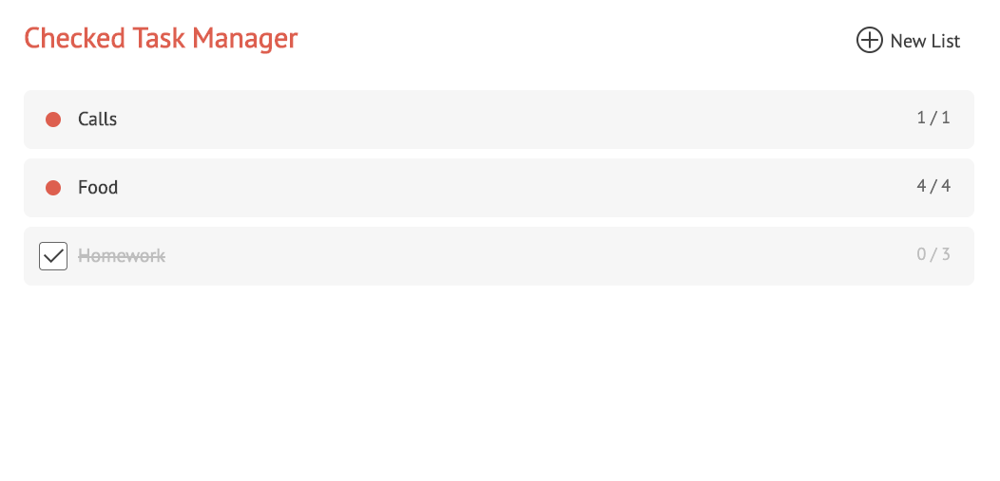
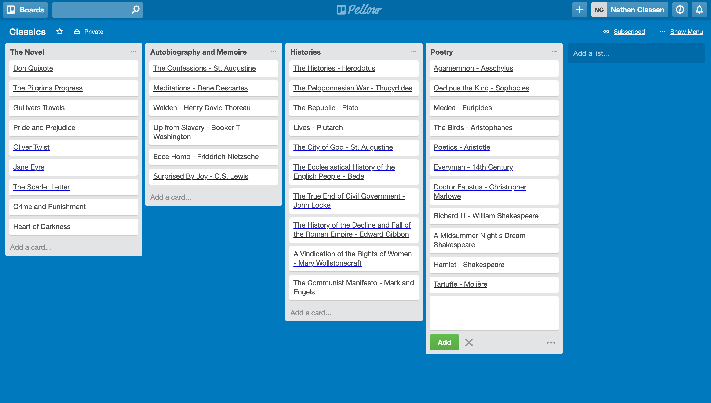
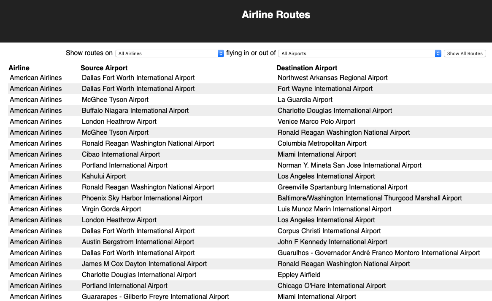

Michael del Rio
I’m a software engineer based in Toronto with experience in Node/Javascript, Ruby/Rails, AWS, Docker, React.js, and PostgreSQL.
I am a co-creator of Bento, a blazing-fast serverless video transcoding pipeline.
Bento is a fast serverless video transcoding pipeline that can be easily deployed to Amazon Web Services (AWS).
Read our case study to learn about the engineering behind Bento, including how we leveraged the instant scale of functions as a service to maximize the speed of our pipeline.
Read the Bento Case StudyOther projects
-

Get to-it
A personal task management app built with Sinatra and a PostgreSQL database
-

Atrello
A personal project management app inspired by Trello, using a Rails back-end API with a PostgreSQL database and a React/Redux front-end.
-

Airline-Routes
A route-finding React application bootsrapped with Create React App